Twórcy Patrick McKay, John D. Payne
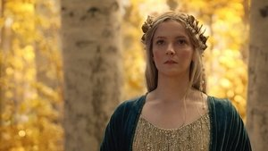
39mGaladriel is disturbed by signs of an ancient evil’s return; Arondir makes an unsettling discovery; Elrond is presented with an intriguing new venture; Nori breaks the Harfoot community’s most deeply-held rule.
 68m
68mGaladriel finds a new ally; Elrond faces a cold reception from an old friend; Nori endeavors to help a Stranger; Arondir searches for answers while Bronwyn warns her people of a threat.
 70m
70mArondir finds himself a captive. Galadriel and Halbrand explore a legendary kingdom. Elendil is given a new assignment. Nori faces the consequences.
 72m
72mQueen Regent Míriel’s faith is tested. Isildur finds himself at a crossroads. Elrond uncovers a secret. Arondir is given an ultimatum. Theo disobeys Bronwyn.
 73m
73mNori questions her instincts. Elrond struggles to stay true to his oath. Halbrand weighs his destiny. The Southlanders brace for attack.
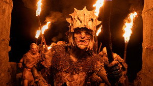
70mAdar and his army march on Ostirith.
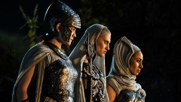
73mSurvivors of a cataclysm try to find safety. The Harfoots confront evil. Durin is torn between friendship and duty. Adar considers a new name.
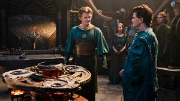
73mNew alliances are forged.
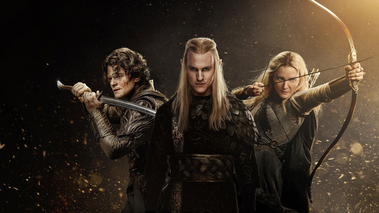
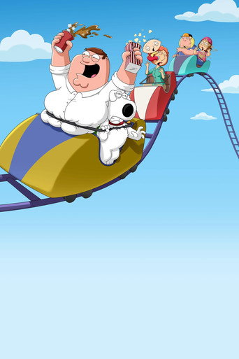
Klasyka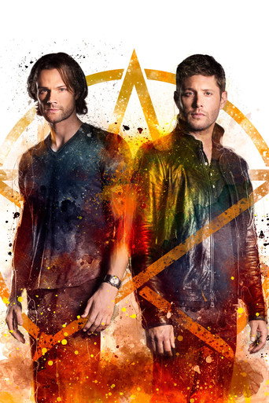
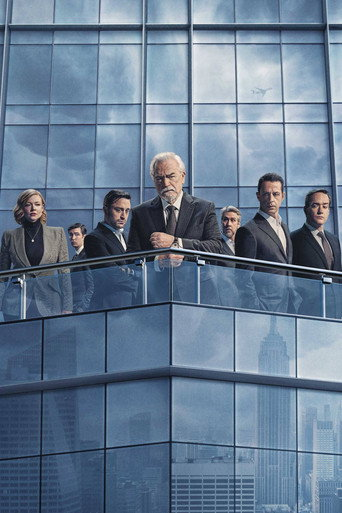
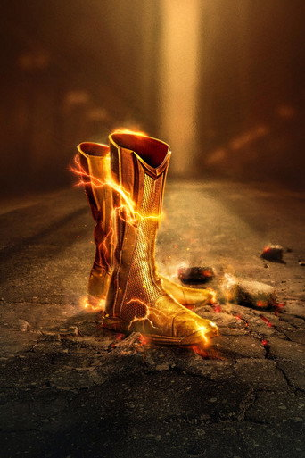
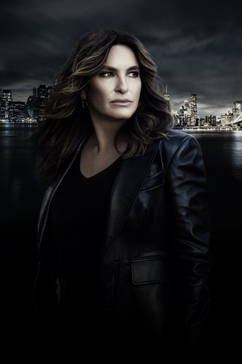
Klasyka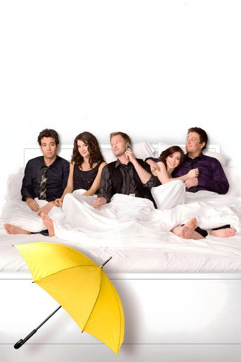
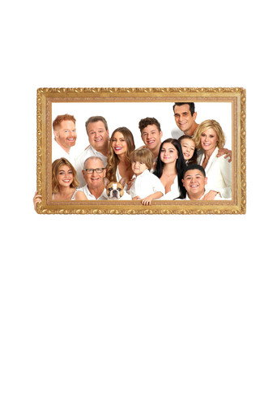

3 sezony · 24 odcinki
Od 14 lat
Platforma: Prime Video
Amazon Studios, New Line Cinema